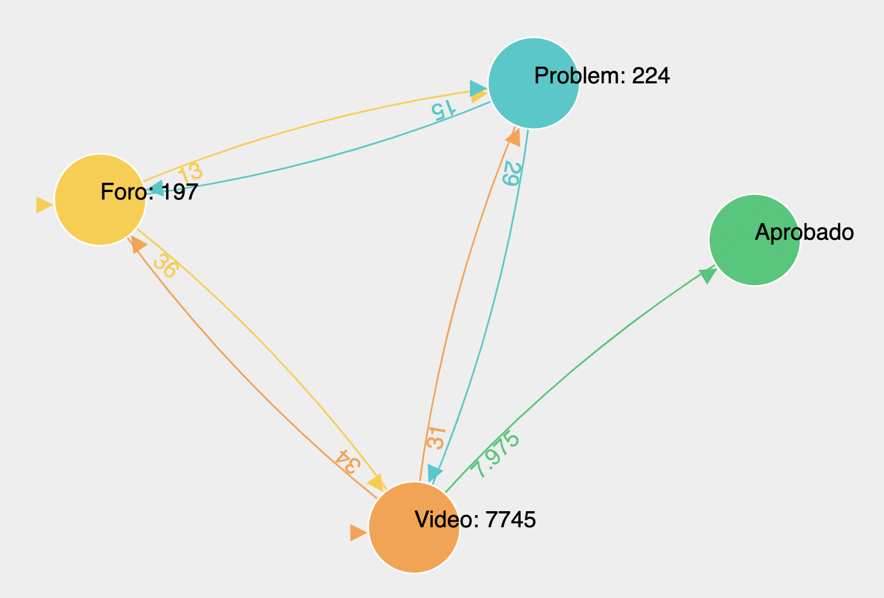
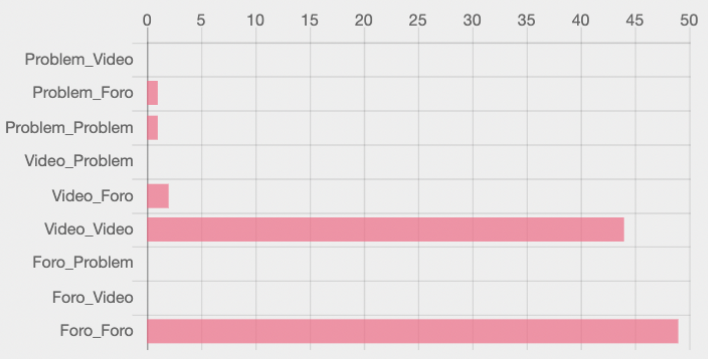
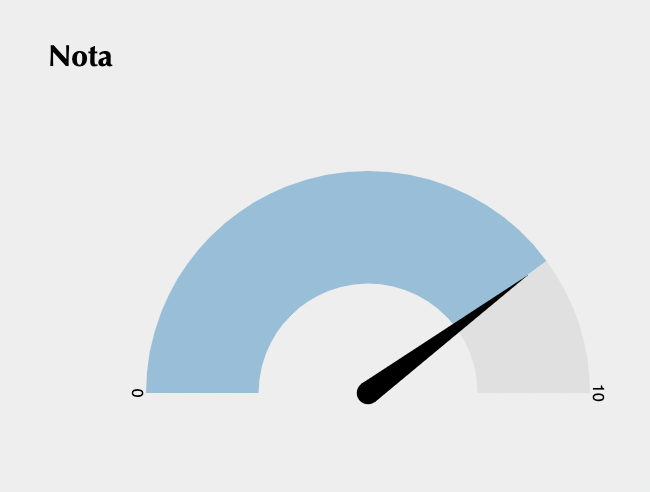
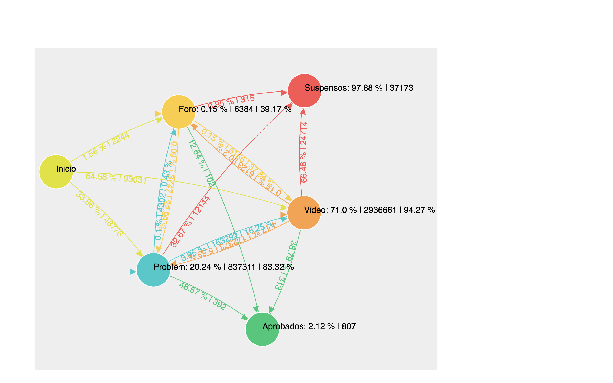
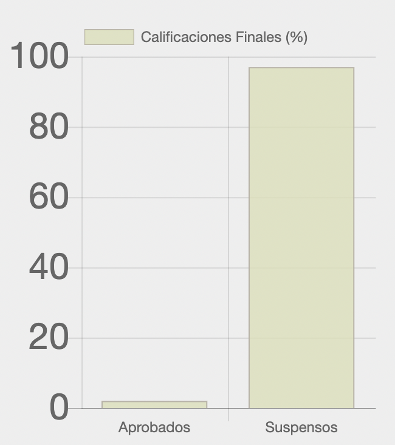
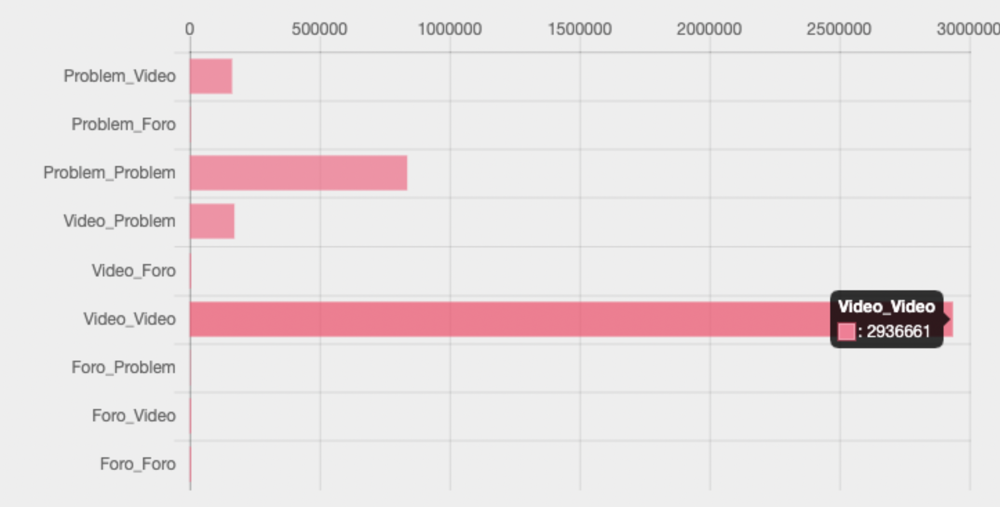
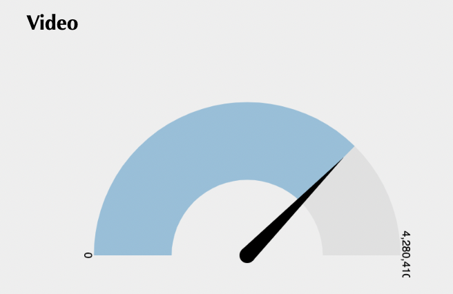

Para probar el funcionamiento de la web se necesitan datos extraídos de MOOCs y clases interactivas de la plataforma edX.
Esta plataforma proporciona un registro con distintos eventos.
Los siguientes eventos son los que se han considerado más significativos para poder realizar una investigación sobre los patrones:
Vídeo: son eventos que se producen al reproducir un vídeo, como parar, avanzar y pausar el vídeo.
Problema: son eventos que se producen al hacer un test o un ejercicio evaluable. Este contiene una nota ponderada sobre 10.
Foro: son eventos que se producen al interactuar con el foro del curso. Cómo puede ser mirar una pregunta, responderla o crear una nueva discursión.
Teneindo en cuenta que se pueden seleccionar varios tipos de archivos, se muestran distintos gráficos. Estos son los tipos de archivos que se pueden introducir:
Archivo de un estudiante sólo
Archivo de todos los estudiantes
En el caso de que se detecte un fichero de UN SOLO ESTUDIANTE se mostrarán los siguientes gráficos:
Diagrama final con los eventos del estudiante como este:

Diagrama final de un estudiante
Gráfico de barras horizontales con los eventos principales, de vídeo a problema, de vídeo a problema, de vídeo a vídeo etc...

Gráfico horizontal de un estudiante
Cuatro velocímetros con los tres eventos principales (Foro, vídeo y Problema) y la nota final. Siendo para el primer caso el punto máximo del velocímetro el número total de eventos
y para el caso de la nota final el punto máximo el 10.

Velocímetro de un estudiante
Por el contrario, en el caso de que se detecte un fichero de TODOS LOS ESTUDIANTES se mostrarán los siguientes gráficos:
Diagrama final con los eventos totales de los estudiantes como este:

Diagrama final de los estudiantes
Gráfico de barras verticales con el número total de suspensos y aprobados.

Gráfico de las calificaciones de los estudiantes
Gráfico de barras horizontales con los eventos principales, de vídeo a problema, de vídeo a problema, de vídeo a vídeo etc...

Gráfico horizontal de los estudiantes
Tres velocímetros con los tres eventos principales (Foro, vídeo y Problema). Siendo el punto máximo del velocímetro de eventos el total de estos.

Velocímetro de los estudiantes
DESCRIPCIÓN EXTENDIDA DEL DIAGRAMA FINAL
FICHERO DE VARIOS ESTUDIANTES En este caso nos encontramos nodos que se interpretan de distinas maneras:
El nodo Inicio: indica que es lo primero que hacen los estudiantes al iniciar una nueva sesión. Las flechas salientes de este hacen un 100%.
En el link se indica el porcentaje y el número real de eventos.
Los nodos de suspensos y el de aprobados suman el 100% con sus flechas entrantes e indican el número de estudiantes que han superado el curso.
En cada path podemos cual es el último evento que realizan los estudiantes y el porcentaje/número real desde el que parten.
El resto de nodos indican los eventos, siendo el nombre del nodo los eventos que van de el mismo a sí mismo.
Los paths de los nodos indican: % de eventos de este tipo sobre el total | número real | % de eventos de este tipo sobre el tipo de evento (foro, vídeo o problema).
FICHERO DE UN ESTUDIANTE En este gráfico sólo nos encontramos dos tipos de nodo:
Los nodos de eventos: en ellos esta representado el número de eventos real y
el número de dentro del nodo indica las veces que desde ese evento vuelve a este.
El nodo aprobado/suspensos indica su calificación final sobre 10 en el path y este parte del último evento realizado.